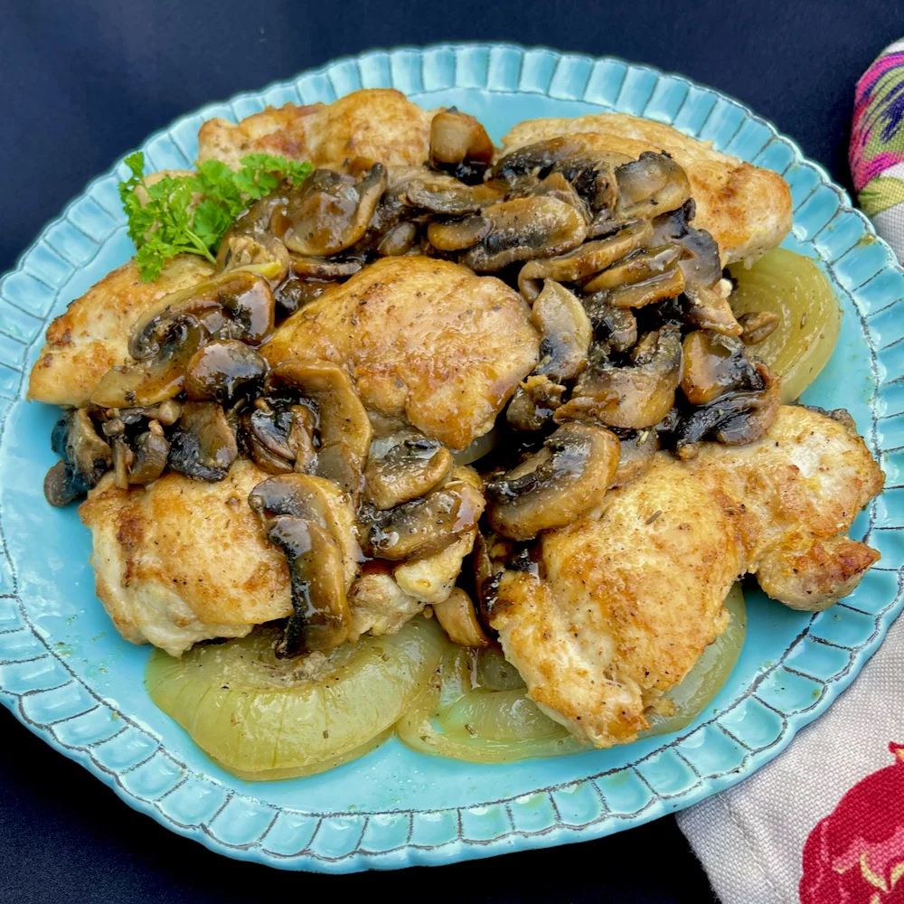

Baked Chicken Thighs with Mushrooms and Onions

Description
Chicken thighs are delicious and can be ready in just about 35 minutes.
Ingredients
- 1 ½ pounds boneless, skinless chicken thighs
- 1 teaspoon garlic powder
- 1 teaspoon onion powder
- salt and freshly ground black pepper to taste
- 2 tablespoons olive oil, divided
- 8 ounces white mushrooms, sliced
- 4 cloves garlic, smashed
- 1 teaspoon herbes de Provence
- 1 medium onion, cut crosswise into 6 rings
- ½ cup dry white wine
- snipped fresh chives or parsley for garnish (optional)
Steps
- Preheat the oven to 350 degrees F (175 degrees C).
-
Pat thighs dry with paper towels. Combine garlic powder, onion powder,
salt, and pepper in a small bowl. Sprinkle seasoning on both sides of
the chicken thighs.
-
Heat 1 tablespoon olive oil in a 12-inch nonstick oven-safe skillet over
medium heat. Swirl the pan to coat the bottom with the hot oil. Place
seasoned thighs in the skillet and cook until browned, about 3 minutes.
Turn thighs and brown the other side, about 2 minutes. Transfer browned
thighs to a plate and keep warm.
-
Add remaining 1 tablespoon olive oil to the same skillet. Add mushrooms;
cook and stir for about 2 minutes. Add smashed garlic cloves and herbes
de Provence; cook and stir for 1 more minute.
-
Move mushrooms to one side of the skillet and place 3 onion rings into
the skillet. Place a browned chicken thigh on top of each onion slice.
Move mushrooms to create an empty space in the skillet, and place the
remaining onion rings and chicken thighs in the skillet.
-
When all the onion rings and chicken thighs are placed, redistribute the
mushrooms evenly around the skillet. Pour white wine over top and cover.
-
Transfer skillet to the preheated oven and bake until chicken thighs are
no longer pink in the center and the juices run clear, 15 to 20 minutes.
An instant-read thermometer inserted into the center should read at
least 165 degrees F (74 degrees C).
-
Serve each chicken piece with a slice of the cooked onion and some
mushrooms. Garnish with snipped chives or parsley.
Return to menu